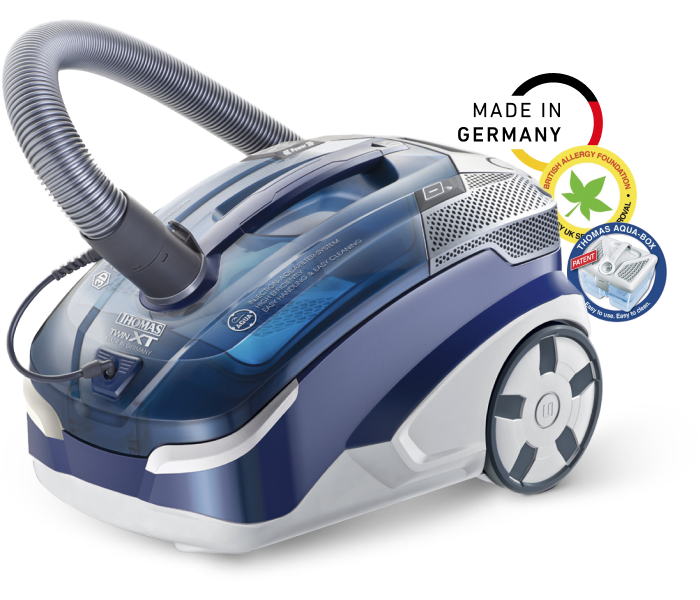
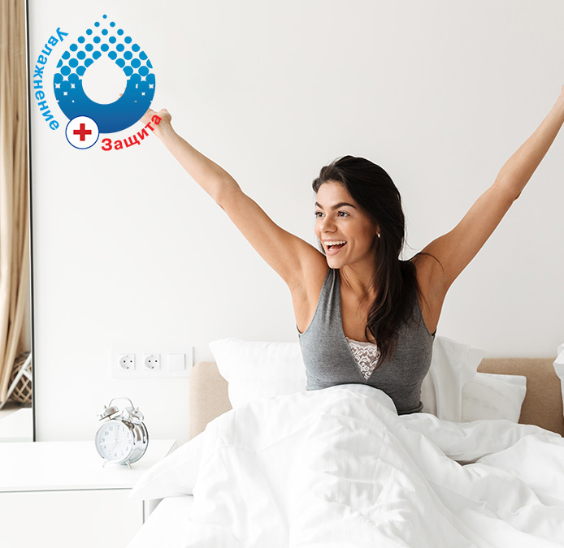
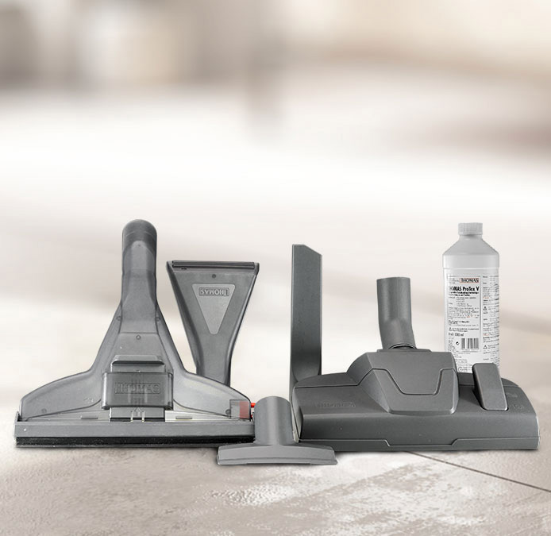

<!DOCTYPE html>
<html lang="ua"></html>
<head>
  <meta charset="UTF-8"/>
  <meta name="viewport" content="width=device-width, initial-scale=1.0"/>
  <meta http-equiv="X-UA-Compatible" content="ie=edge"/>
  <title>Thomas Twin XT</title>
</head>
<body>
  <style>* {
  margin: 0;
  padding: 0;
  box-sizing: border-box;
}
*:before, *:after {
  box-sizing: border-box;
}

.tms-img-resp {
  display: inline-block;
  max-width: 100%;
  height: auto;
}

.tms-h1 {
  font-family: Arial, sans-serif;
  font-style: normal;
  font-weight: bold;
  font-size: 64px;
  line-height: 110%;
  color: #3D505A;
}

.tms-h2 {
  font-family: Arial, sans-serif;
  font-style: normal;
  font-weight: bold;
  font-size: 52px;
  line-height: 110%;
  color: #3D505A;
}

.tms-large-p {
  font-family: Arial, sans-serif;
  font-style: normal;
  font-weight: normal;
  font-size: 28px;
  line-height: 120%;
  letter-spacing: -0.01em;
  color: #3D505A;
}

.tms-medium-p {
  font-family: Arial, sans-serif;
  font-style: normal;
  font-weight: normal;
  font-size: 24px;
  line-height: 130%;
  letter-spacing: -0.02em;
  color: #3D505A;
}

.tms-small-p {
  font-family: Arial, sans-serif;
  font-style: normal;
  font-weight: bold;
  font-size: 18px;
  line-height: 135%;
  letter-spacing: -0.01em;
  color: #3D505A;
}

.tms-main-container {
  max-width: 1520px;
  margin: 0 auto;
  position: relative;
}

.tms-section {
  margin-bottom: 200px;
  padding: 0 50px 0 50px;
}

.tms-i {
  position: relative;
  display: block;
  text-align: left;
  padding-left: 82px;
}
.tms-i:before {
  content: " ";
  left: 0;
  top: -8px;
  position: absolute;
  height: 50px;
  width: 50px;
  background: url(img/tms-li-icon.svg) 0 0 no-repeat;
  display: inline-block;
}

.tms-chest {
  display: grid;
  grid-template-columns: 1fr 1fr;
  grid-gap: 98px;
  justify-content: space-between;
  align-items: center;
}
.tms-chest .tms-h2 {
  margin-bottom: 24px;
}
.tms-chest img, .tms-chest video {
  border-radius: 12px;
}

.tms-reverse .tms-content {
  grid-column-start: 2;
  grid-row-start: 1;
}

#tms-section-1 {
  background: url(img/tms-section-1-bg.jpg) center bottom no-repeat;
  background-size: cover;
  height: 100vh;
  display: grid;
  grid-template-columns: 1fr;
  align-content: space-between;
}
#tms-section-1 .tms-logo {
  text-align: center;
  padding-top: 100px;
}
#tms-section-1 .tms-content {
  text-align: center;
}
#tms-section-1 .tms-content .tms-large-p {
  width: 70%;
  margin: 32px auto 0;
}

#tms-section-2 .tms-vc {
  text-align: center;
}
#tms-section-2 .tms-h1 {
  text-align: center;
  margin-top: 48px;
}
#tms-section-2 .tms-list {
  margin-top: 79px;
  display: grid;
  grid-template-columns: repeat(3, 1fr);
  justify-items: center;
}
#tms-section-2 .tms-listItem {
  display: grid;
  grid-template-columns: 95px auto;
  align-items: center;
  justify-content: start;
}
#tms-section-2 .tms-listItem img {
  padding: 8px;
  background: #F6F6F6;
  border-radius: 50%;
  box-shadow: 5px 5px 25px 1px rgba(39, 92, 141, 0.2);
}

#tms-section-3 .tms-h1, #tms-section-11 .tms-h1 {
  text-align: center;
}
#tms-section-3 .tms-list, #tms-section-11 .tms-list {
  margin-top: 95px;
  display: grid;
  grid-template-columns: 1fr 1fr;
  grid-gap: 46px;
}

@media only screen and (max-width: 992px) {
  .tms-chest {
    grid-template-columns: 1fr;
    justify-items: center;
  }

  .tms-reverse .tms-content {
    grid-column-start: 1;
  }

  .tms-section {
    margin-bottom: 100px;
  }

  #tms-section-1 .tms-content .tms-large-p {
    width: 100%;
  }

  #tms-section-2 .tms-list {
    grid-template-columns: 1fr;
    grid-gap: 46px;
  }

  #tms-section-3 .tms-list, #tms-section-11 .tms-list {
    grid-template-columns: 1fr;
  }
}
@media only screen and (max-width: 480px) {
  .tms-h1 {
    font-size: 32px;
  }

  .tms-h2 {
    font-size: 26px;
  }

  .tms-large-p {
    font-size: 14px;
  }

  .tms-medium-p {
    font-size: 12px;
  }

  .tms-small-p {
    font-size: 9px;
  }
}
  </style>
  <div class="tms-main-container">
    <div class="tms-section" id="tms-section-1">
      <div class="tms-logo"></div>
      <div class="tms-content">
        <div class="tms-h1">Чистий дім - здорова сім&#39;я!</div>
        <div class="tms-large-p">Ми дбаємо про здоров&#39;я і благополуччя своєї родини і намагаємося проводити багато часу разом. Тому так важливо, щоб удома панувала атмосфера тепла, затишку і чистоти.</div>
      </div>
    </div>
    <div class="tms-section" id="tms-section-2">
      <div class="tms-vc"></div>
      <div class="tms-content">
        <div class="tms-h1">THOMAS Twin XT</div>
        <div class="tms-list">
          <div class="tms-listItem">
            <div class="tms-medium-p">Сухе прибирання</div>
          </div>
          <div class="tms-listItem">
            <div class="tms-medium-p">Вологе прибирання</div>
          </div>
          <div class="tms-listItem">
            <div class="tms-medium-p">Збирання рідин</div>
          </div>
        </div>
      </div>
    </div>
    <div class="tms-section" id="tms-section-3">
      <div class="tms-h1">З пилососом THOMAS TWIN XT<br/>Ви завжди знайдете правильне рішення:</div>
      <div class="tms-list">
        <div class="tms-large-p tms-i">ЯК отримати 100% чистоти і свіжості повітря при прибиранні?</div>
        <div class="tms-large-p tms-i">ЯК помити підлогу до чистоти і глянцю?</div>
        <div class="tms-large-p tms-i">ЯК випрати й оновити килими?</div>
        <div class="tms-large-p tms-i">ЯК помити м&#39;які меблі й видалити плями?</div>
        <div class="tms-large-p tms-i">ЯК швидко зібрати пролиті рідини й запобігти появі плям?</div>
        <div class="tms-large-p tms-i">ЯК швидко зібрати великі обсяги води при прориві труби і попередити пошкодження меблів і підлогових покриттів?</div>
      </div>
    </div>
    <div class="tms-section tms-chest">
      <div class="tms-content">
        <div class="tms-h2">Основні причини для покупки THOMAS Twin XT</div>
        <div class="tms-large-p"><strong>БЕЗДОГАННО ЧИСТЕ ПОВІТРЯ </strong>завдяки високому ступеню фільтрації.<br/><br/>Водяний фільтр <strong>AquaBox </strong>з унікальною технологією придушення пилу <strong>Wet-Jet </strong>утримує 99,99% дрібного пилу і 100% пилку.<br/><br/>Повітря після прибирання відчувається чистим і свіжим, як після літнього дощу!<br/><br/><strong>100% відчуття свіжості.</strong></div>
      </div>
      <div class="tms-media"></div>
    </div>
    <div class="tms-section tms-chest tms-reverse">
      <div class="tms-content">
        <div class="tms-h2">Сухе прибирання з AquaBox: без мішків - без зайвих витрат</div>
        <div class="tms-large-p">Всього 1 літр води надійно утримує в <strong>AquaBox </strong>сміття, дрібний пил, шерсть тварин, кліщів та інші алергени, які після прибирання просто виливаються разом із брудною водою.<br/><br/><strong>І як результат - чистий будинок і відчуття свіжого повітря!</strong></div>
      </div>
      <div class="tms-media">
        <video class="tms-img-resp" src="img/tms-section-5-video.mp4" poster="img/tms-section-5-bg.jpg" preload="auto" autoplay="true" loop="true" muted="muted"></video>
      </div>
    </div>
    <div class="tms-section tms-chest">
      <div class="tms-content">
        <div class="tms-h2">Ефективне миття килимів і твердої підлоги</div>
        <div class="tms-large-p">Глибоке вологе чищення килимів із мінімальною залишковою вологістю, видалення випадкових і застарілих плям, відновлення висоти ворсу і зовнішнього вигляду килимових покриттів.<br/><br/>Якісне миття твердих підлогових покриттів без зайвої вологи і розводів.</div>
      </div>
      <div class="tms-media">
        <video class="tms-img-resp" src="img/tms-section-6-video.mp4" poster="img/tms-section-6-bg.jpg" preload="auto" autoplay="true" loop="true" muted="muted"></video>
      </div>
    </div>
    <div class="tms-section tms-chest tms-reverse">
      <div class="tms-content">
        <div class="tms-h2">Вологе очищення м&#39;яких меблів і матрасів</div>
        <div class="tms-large-p">Ефективне вологе очищення м&#39;яких меблів, знищення плям і заяложень, оновлення кольору оббивки.<br/><br/>Час повного висихання залежить від інтенсивності подачі миючого розчину і складу оббивки.</div>
      </div>
      <div class="tms-media">
        <video class="tms-img-resp" src="img/tms-section-7-video.mp4" poster="img/tms-section-7-bg.jpg" preload="auto" autoplay="true" loop="true" muted="muted"></video>
      </div>
    </div>
    <div class="tms-section tms-chest">
      <div class="tms-content">
        <div class="tms-h2">Екстрене збирання пролитих рідин і бруду</div>
        <div class="tms-large-p">Калюжі на підлозі, пролита вода, рідкий бруд - моментальне усунення слідів аварій.</div>
      </div>
      <div class="tms-media">
        <video class="tms-img-resp" src="img/tms-section-8-video.mp4" poster="img/tms-section-8-bg.jpg" preload="auto" autoplay="true" loop="true" muted="muted"></video>
      </div>
    </div>
    <div class="tms-section tms-chest tms-reverse">
      <div class="tms-content">
        <div class="tms-h2">Додаткові рішення, які розширюють можливості THOMAS Twin XT</div>
        <div class="tms-large-p"><strong>THOMAS DryBOX </strong>– циклонна система фільтрації для сухого прибирання з фракційним розділенням пилу для швидкого прибирання без підготовки. DryBox завжди готовий до роботи.*<br/><br/><strong>Одноразові HEPA-мішки </strong>для оперативного прибирання та збирання грубого і специфічного сміття.*<br/><br/></div>
        <div class="tms-small-p">*у комплектацію пилососа не входять.</div>
      </div>
      <div class="tms-media"></div>
    </div>
    <div class="tms-section tms-chest">
      <div class="tms-content">
        <div class="tms-h2">У комплектації є все для бездоганної чистоти</div>
        <div class="tms-large-p">• Перемикна насадка підлога/килим<br/>• Насадка для оббивки м&#39;яких меблів<br/>• Щілинна насадка<br/>• Вузька миюча насадка для м&#39;яких меблів і матраців<br/>• Широка миюча насадка для килимів з адаптером для твердої підлоги<br/>• Концентрат ProTex 250 мл для очищення текстильних поверхонь<br/></div>
      </div>
      <div class="tms-media"></div>
    </div>
    <div class="tms-section" id="tms-section-11">
      <div class="tms-h1">Технічні особливості<br/>THOMAS Twin XT</div>
      <div class="tms-list">
        <div class="tms-large-p tms-i">Висока потужність двигуна - 1700 Вт</div>
        <div class="tms-large-p tms-i">Електронне керування TouchTronic</div>
        <div class="tms-large-p tms-i">2 положення паркування. Легко поміститься в шафі</div>
        <div class="tms-large-p tms-i">Зручні гнізда для насадок - насадки завжди під рукою</div>
        <div class="tms-large-p tms-i">Не потрібно носити. Висока маневреність завдяки роликам EasyDrive</div>
        <div class="tms-large-p tms-i">Великий радіус прибирання від 1 розетки - 11 м</div>
        <div class="tms-large-p tms-i">Автоматичне змотування кабелю</div>
        <div class="tms-large-p tms-i">НЕРА фільтр, що миється</div>
      </div>
    </div>
  </div>
</body>